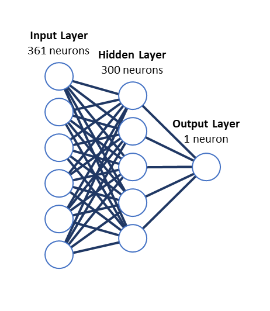
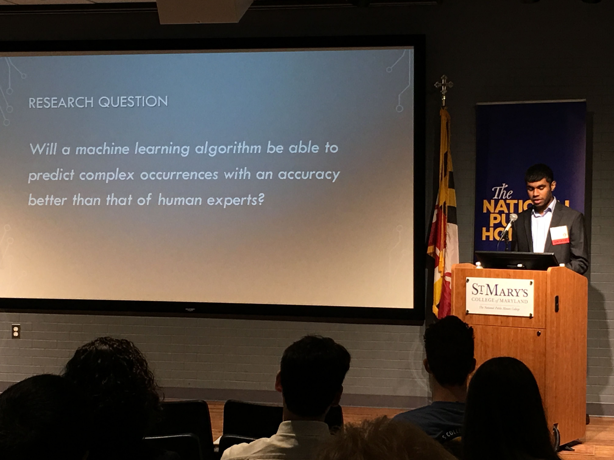

NFL Predictions
Background
I'm a huge NFL fan. Come fall, I'll be spending most of my Sundays in front of the TV, mostly cheering on the Ravens and booing the Steelers, but I take whatever game I get. But once the Super Bowl ends, the lack of games hits me like a truck. For months, all the NFL has to offer are random free-agent signings, none of which ever seem to help the Ravens.
One day in Summer 2018, I wondered how good a computer would be at predict NFL game results. I didn't know much about machine learning at the time, but I was suddenly curious. And so I embarked on a journey of learning machine learning and seeing how good my computer was at fantasy football.
Design
I downloaded a large dataset of 10 years worth of NFL game results, and with Python and scikit-learn in hand, I input previous game results into various machine learning methods, to see whether the models could predict future matchups. I was aiming for an accuracy near 70%, as most human analysts had accuracies between 60% - 70%, but the first few methods I tried didn't seem to be quite up to the mark, topping out with Naive Bayes at 63.7% accuracy.
So next, I delved into the labyrinth that is neural networks, which offer more flexibility, but in turn are much more complex. After a lot of fiddling and model training, I found a model that predicted NFL game results at an accuracy of 69.4%! It was structured as seen in this image, with the input layer being 361 neurons, the one hidden layer having 300 neurons, and the output layer having one neuron that determined which team won.

Results
After the model was trained, I tried using it to predict a couple of matchups during the 2018-19 NFL season. Unfortunately, due to the massive amounts of data the algorithm requires, I was only able to predict 5 games, but the results do look very promising, with an experimental accuracy of 80%.
| Matchup |
Prediction |
Winner |
| Falcons at Eagles |
Eagles |
Eagles |
| Cowboys at Eagles |
Cowboys |
Cowboys |
| Falcons at Cowboys |
Cowboys |
Cowboys |
| Ravens at Falcons |
Ravens |
Ravens |
| Eagles at Cowboys |
Eagles |
Cowboys |
Presentations
I presented this project at the 2019 Baltimore Science Fair, winning awards from:
- Raytheon Solipsys
- US Coast Guard Yard
- National Security Agency
I was also selected to be an oral presenter at the 2019 Maryland Junior Science and Humanities Symposium.

Links
Final Report